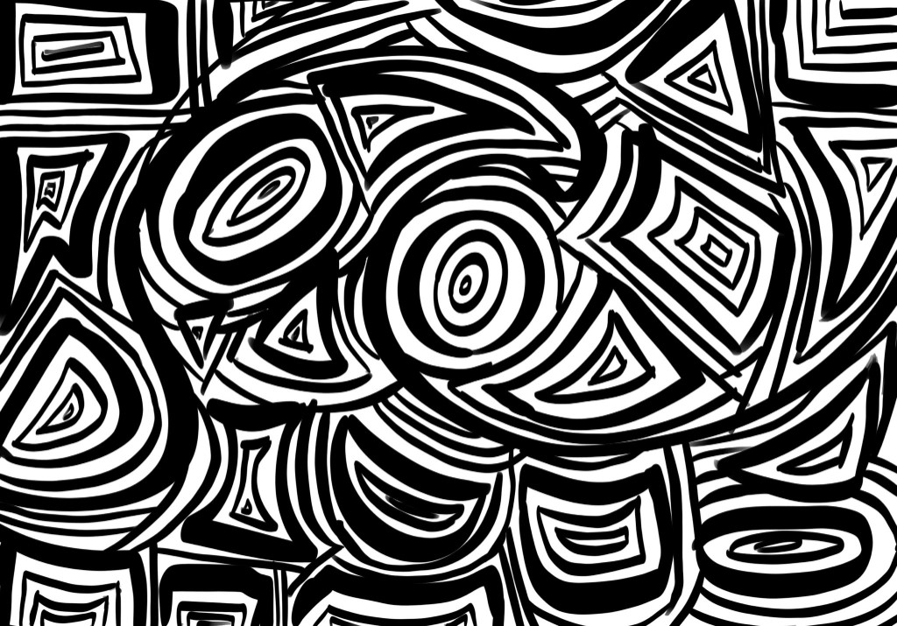
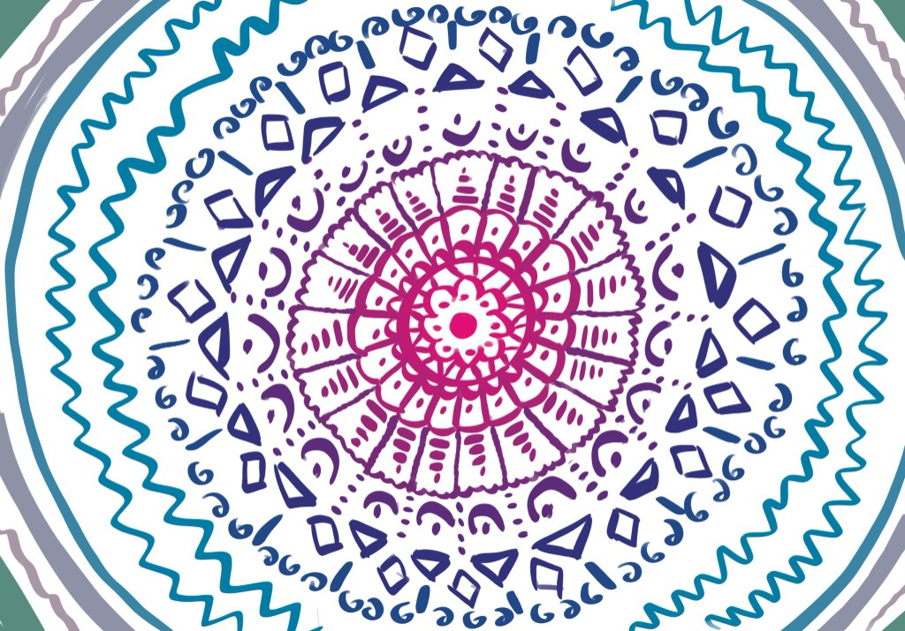
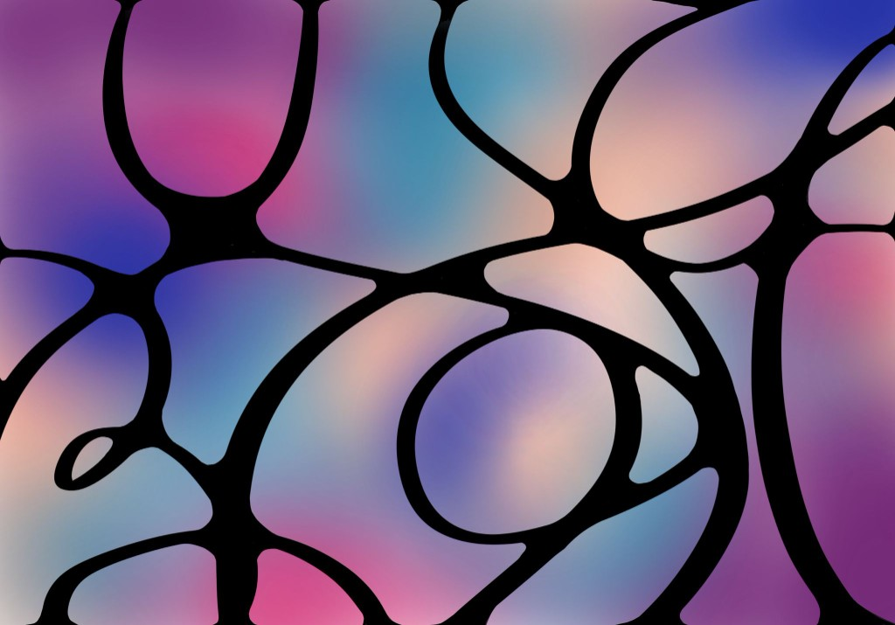
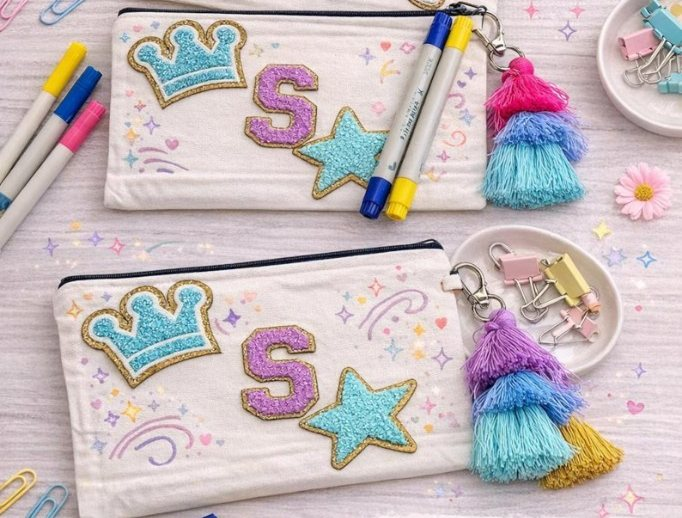

PROJECT GALLERY
Color in action.
Examples of the art projects we bring into care spaces, so patients, families, and care teams know exactly what to expect before they pick up a pen.
01
Doodle Distractions
Mindless art that allows patients to let go of stress. There is no plan and no wrong answer — just a pen following whatever shape comes next, filling a page one loop at a time.

02
Mandala Making
Creative dot art that allows hospital staff to reset. A mandala is built outward from a single point in the center, so it can be picked up and put down between rounds without ever losing the thread.

03
Scratch-off Sessions
Projects that allow patients to introduce color in a relaxing way. A black coated sheet hides a rainbow underneath, and every line scratched away reveals color — so even the smallest amount of effort produces something bright.

04
Comfort Crafts
Small arts and crafts kits we'll provide for families in waiting rooms. Each kit is designed to be finished in a single sitting, with everything needed already inside — no setup, no mess, and nothing to take home but the finished piece.
